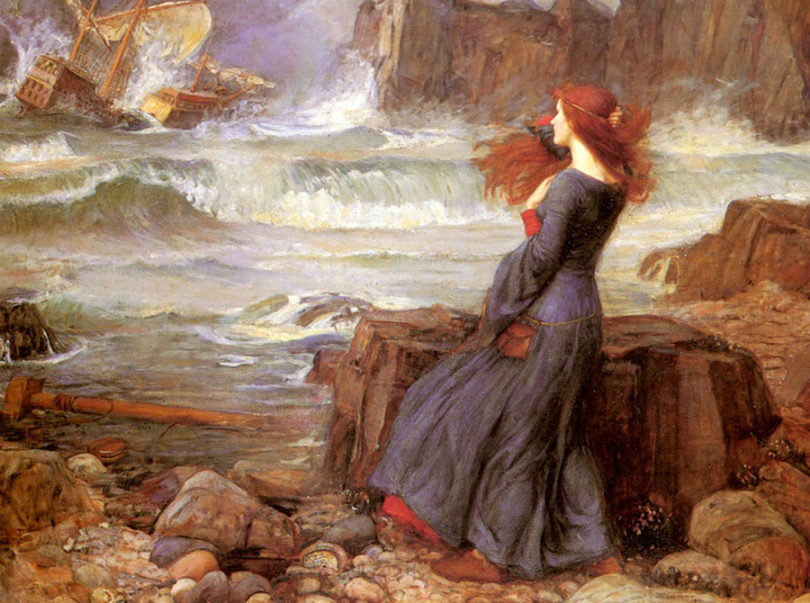
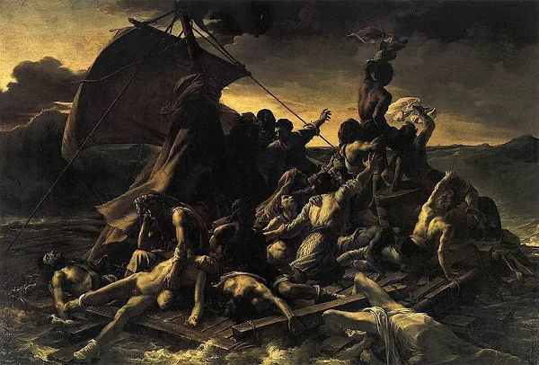

O romantismo é um movimento artístico e cultural que
privilegia as emoções, a subjetividade e o individualismo.
Contrário ao objetivismo e as tradições clássicas de
perfeição, ele apresenta uma visão de mundo centrada
no ser humano com destaque para as sensações humanas
e a liberdade de pensamento.
surgiu na Europa no século XVIII no contexto da revolução
industrial e do iluminismo, movimento intelectual e filosófico
baseado na razão. Ele durou até meados do século XIX, quando
começa o realismo.
Características
- Oposição ao modelo clássico;
- Estrutura do texto em prosa, longo;
- Desenvolvimento de um núcleo central;
- Narrativa ampla refletindo uma sequência de tempo;
- O indivíduo passa a ser o centro das atenções;
- Surgimento de um público consumidor (folhetim);
- Uso de versos livres e versos brancos;
- Exaltação do nacionalismo, da natureza e da pátria;
- Idealização da sociedade, do amor e da mulher;
- Criação de um herói nacional;
- Sentimentalismo e supervalorização das emoções pessoais;
- Subjetivismo e egocentrismo;
- Saudades da infância;
- Fuga da realidade.

